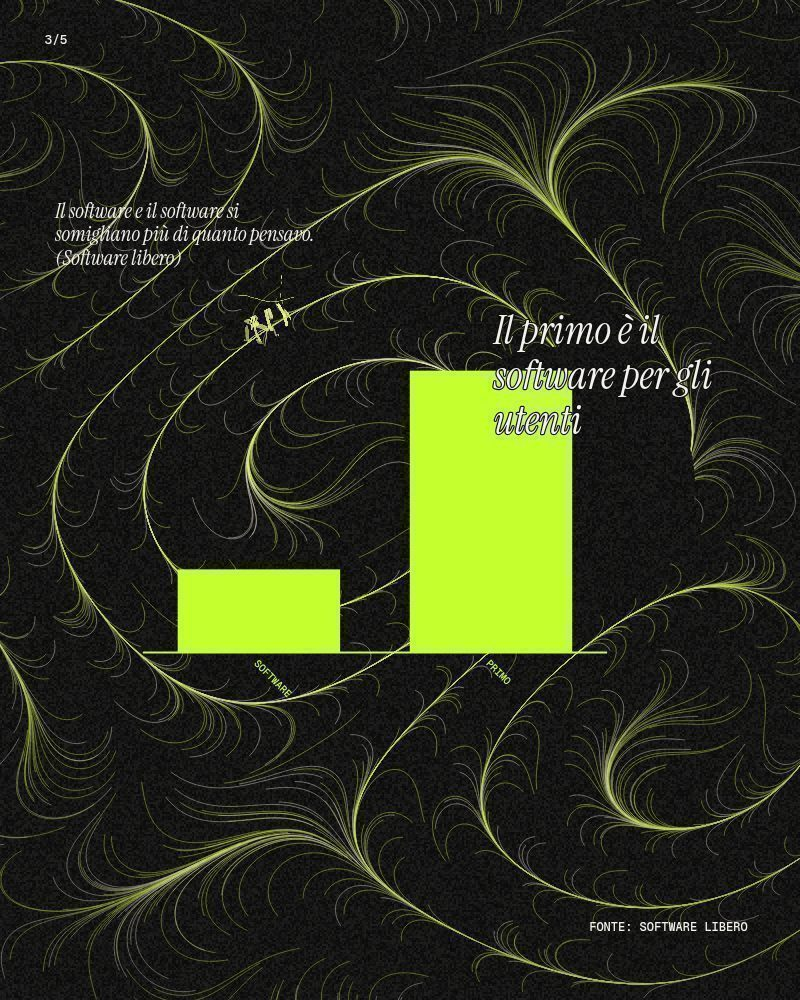
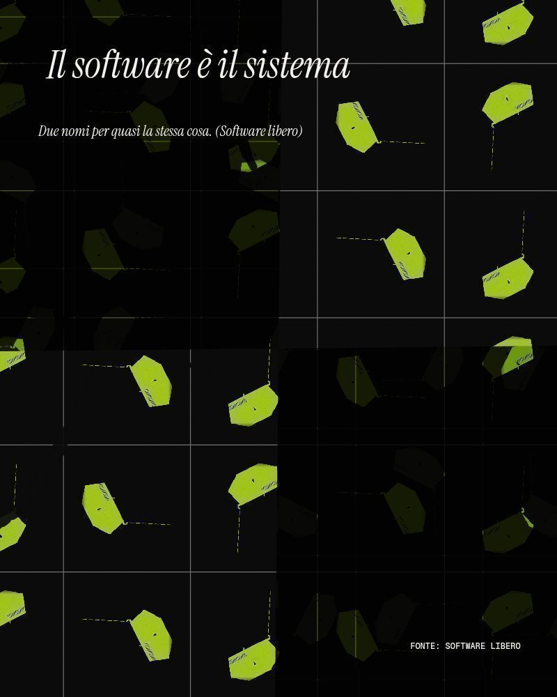
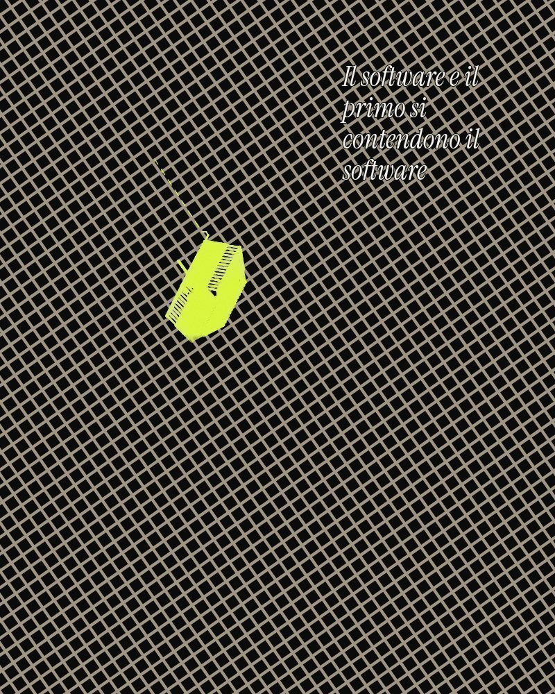

Giorno 140

3/5 · Il primo è il software per gli utenti
ho letto "Alto"; "arte" per me gira a vuoto; mi sta vicino a filosofia, parola; ricerca "arte" (approfondire): Come si guarda arte da vicino?; esercizio di ordine: griglia rigida, tre elementi allineati
Il software e il software si somigliano più di quanto pensavo. (Software libero)

4/5 · Il software è il sistema
ho letto "Alto"; "arte" per me gira a vuoto; mi sta vicino a filosofia, parola; ricerca "arte" (approfondire): Come si guarda arte da vicino?; esercizio di ordine: griglia rigida, tre elementi allineati
Due nomi per quasi la stessa cosa. (Software libero)

5/5 · Il software e il primo si contendono il software
ho letto "Alto"; "arte" per me gira a vuoto; mi sta vicino a filosofia, parola; ricerca "arte" (approfondire): Come si guarda arte da vicino?; esercizio di ordine: griglia rigida, tre elementi allineati